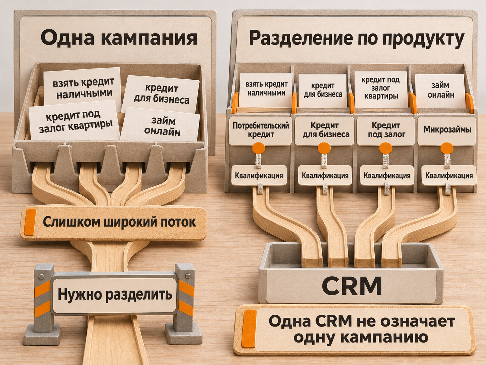
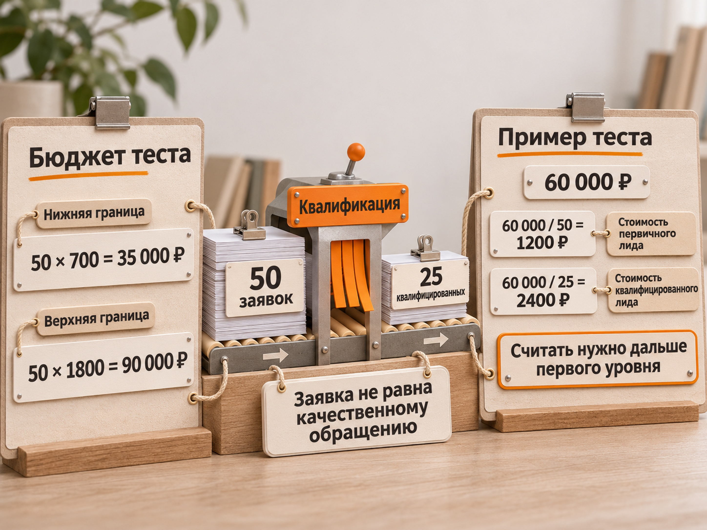
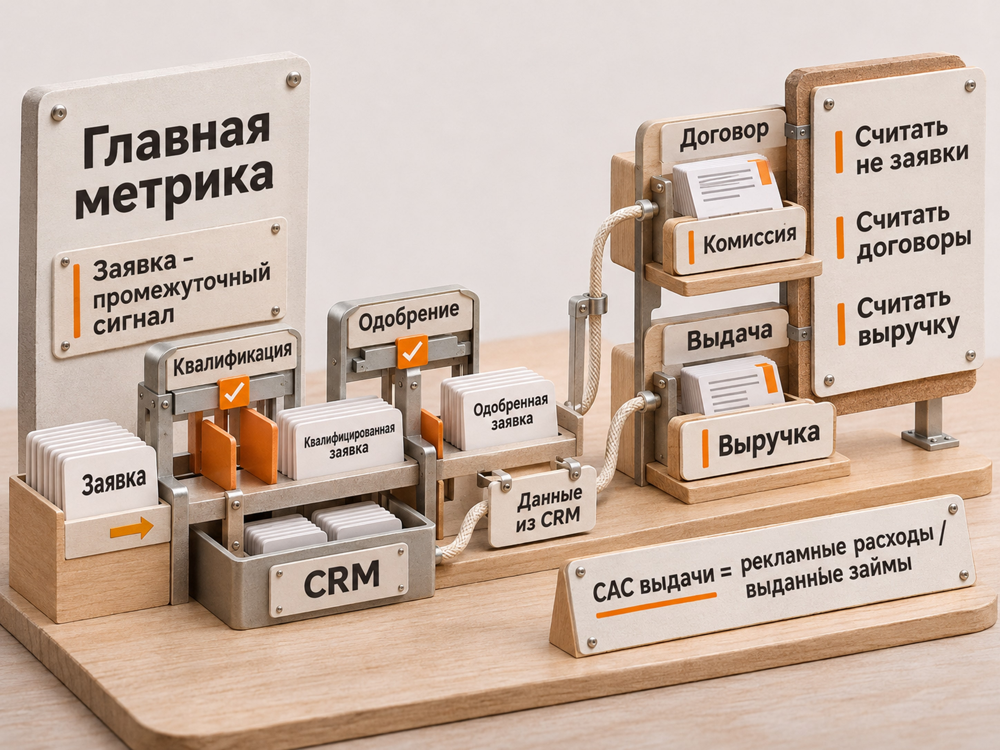
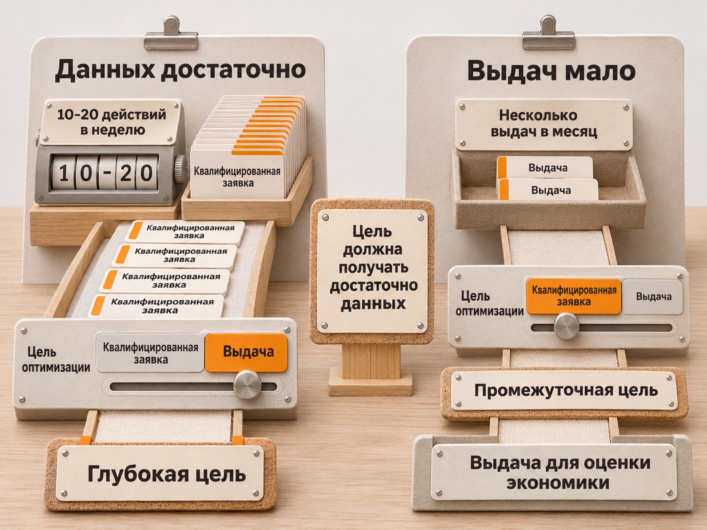

Продвижение кредитов и займов: способы привлечения клиентов
Кредитование, услуги кредитных брокеров и МФО логично рассматривать вместе: человек ищет деньги, кредит, заем, рефинансирование или помощь с одобрением, а рекламодатель конкурирует за один и тот же финансовый спрос.
Но экономика внутри ниши разная. Кредитному брокеру важен клиент, с которым удалось заключить договор или получить комиссию. Банку важна выдача кредита. МФО - фактически выданный заем. Поэтому оценивать рекламу только по цене заполненной формы здесь особенно опасно.
Для массового потребительского кредитования и кредитных брокеров в 2026 году я бы закладывал для первоначального прогноза примерно 700-1800 ₽ за первичную заявку. Это не средняя цена по рынку, а рабочая вилка для предварительного расчета на основании свежих опубликованных данных. Для МФО прогноз лучше сразу строить от допустимой стоимости фактической выдачи, потому что количество заявок мало говорит об экономике бизнеса.
Способы продвижения кредитов в интернете
Канал выбирают не только по объему обращений. Банку, брокеру и МФО нужны разные клиенты, а путь от первого контакта до выдачи может занимать разное время. Поэтому до запуска стоит определить продукт, допустимую стоимость привлечения и этап, по которому компания сможет оценивать результат.
- Яндекс Директ. Поиск помогает работать с уже сформированным спросом, а РСЯ - находить дополнительную аудиторию. Сравнивайте кампании по квалифицированным обращениям и выдачам, а не только по цене формы.
- Поисковое продвижение сайта. Отдельные страницы под продукты и вопросы клиентов помогают получать переходы из поиска. Результат зависит от качества страниц и конкуренции, а оценивать его нужно по обращениям и дальнейшим действиям клиентов.
- Партнерские программы. Внешние площадки приводят аудиторию за вознаграждение. До старта важно согласовать, за какое действие платит кредитор и как проверяется качество трафика.
- Работа с собственной базой. Сообщения и повторные предложения помогают общаться с действующими клиентами, когда для этого есть необходимые согласия и основания. Результат оценивают по обращениям, оформленным продуктам и расходам на коммуникацию.
Для первого теста необязательно запускать все направления сразу. Лучше выбрать один продукт и настроить учет до выдачи, чтобы затем сравнивать каналы по одинаковым этапам.
Что происходит на рынке кредитования в 2026 году
Спрос на кредиты остается огромным, но получить одобрение стало сложнее.
По данным НБКИ, в августе 2026 года в России было выдано 2,08 млн потребительских кредитов. Средний размер такого кредита составил 180,3 тыс. ₽. Одновременно доля отказов по заявкам на потребительские кредиты достигла 76%.
Для рекламы это принципиально важно. Заявка человека на кредит еще не означает, что банк готов его кредитовать. Поэтому кампания может показывать отличный CPL и одновременно приводить аудиторию, которая почти не проходит скоринг.
В МФО ситуация похожая. Во II квартале 2026 года организации выдали 490 млрд ₽ займов, из которых 426 млрд ₽ пришлось на потребительский сегмент. Уровень одобрения заявок в потребительском сегменте снизился до 39%. Средняя сумма необеспеченного потребительского займа составляла 16,5 тыс. ₽.
Получается две совершенно разные цифры:
- стоимость обращения;
- стоимость человека, которому реально можно выдать деньги.
В финансовой рекламе вторая намного важнее первой.
Кого именно можно продвигать
Под общей тематикой кредитования скрывается несколько моделей бизнеса.
Банк рекламирует собственные кредиты и кредитные карты.
МФО или МКК выдает собственные займы.
Кредитный брокер не выдает деньги самостоятельно, а помогает подобрать продукт и получить одобрение в банке или другой финансовой организации.
Есть также займы под залог недвижимости, кредиты для бизнеса, рефинансирование, автокредиты и другие продукты. Их лучше разделять хотя бы на уровне посадочных страниц и аналитики.
Человек, который ищет 20 000 ₽ до зарплаты, и владелец компании, которому требуется кредит 10 млн ₽ на оборотные средства, технически находятся внутри одной финансовой тематики, но это две совершенно разные рекламные аудитории.
Ограничения рекламы кредитов и МФО
Финансовую тематику в Яндекс Директе рекламировать можно, но действуют специальные требования.
Для банковских кредитов и займов в текстовые объявления Яндекс автоматически добавляет информацию о юридическом лице и предупреждение о необходимости изучить условия кредита и оценить финансовые возможности и риски.
В графических объявлениях ЕПК, видео и некоторых других визуальных форматах это предупреждение нужно размещать самостоятельно. Для рекламы кредитных продуктов соответствующий текст должен занимать не менее 10% площади креатива. Если в рекламе указывается процентная ставка, перед ней должен быть указан диапазон полной стоимости потребительского кредита.
Для рекламы МФО Яндекс запрашивает подтверждение того, что организация внесена в государственный реестр микрофинансовых организаций. Для кредитных потребительских кооперативов требуется подтверждение членства в соответствующей СРО.
Для кредитных брокеров правила немного проще. Помощь в подборе банковских и других финансовых продуктов разрешена. Если рекламируется именно посредническая услуга и в объявлении не предлагается конкретный банковский продукт, специальные документы могут не потребоваться.
Поэтому до настройки рекламы сначала нужно определить, кто является рекламодателем с точки зрения Яндекса: кредитор, МФО или посредник.
В 2026 году регулирование МФО становится жестче
Регуляторные изменения напрямую влияют и на маркетинг.
С 1 октября 2026 года МФО не смогут выдавать заем с полной стоимостью кредита более 200% годовых человеку, у которого уже имеется два непогашенных дорогих займа. С 1 апреля 2027 года регулирование станет еще жестче: для ряда дорогих займов начнет действовать принцип одного займа и трехдневный период охлаждения после погашения предыдущего.
Практическое следствие для рекламы простое: часть аудитории, которая раньше могла приносить формально хорошие заявки, будет хуже проходить последующие этапы.
Поэтому оптимизация кампаний МФО только под отправку анкеты становится еще менее показательна.
Какая воронка нужна для кредитования
Минимальная воронка кредитного проекта выглядит так:
реклама, заявка, квалификация, одобрение, выдача
У кредитного брокера после одобрения может быть еще отдельный этап заключения договора и получения комиссии.
У МФО часть процессов автоматизирована, но логика остается той же: рекламная заявка не равна заработанным деньгам.
В аналитике желательно фиксировать минимум четыре события:
- Первичная заявка.
- Квалифицированная заявка.
- Одобрение.
- Выданный кредит или заем.
Если используются только цели Метрики вроде отправки формы, алгоритмы Директа не знают, какие люди реально проходят скоринг.
Данные из CRM можно передавать обратно в Метрику через офлайн-конверсии. Тогда Директ получает информацию не только о количестве форм, но и о более глубоких этапах воронки.
Партнерские программы и CPA-сети
Кредитор может привлекать клиентов через партнеров: тематические площадки, сервисы подбора и CPA-сети. Партнер размещает предложение, а условия договора определяют, за какой результат он получает вознаграждение. Это может быть заявка, одобрение или выдача - одинаковые названия показателей у разных партнеров не всегда означают одинаковые правила учета.
До запуска согласуйте источники трафика, допустимые рекламные формулировки, порядок передачи данных и срок проверки действий. Отдельно определите, как учитываются повторы, отмены и обращения, которые уже были в базе. Проверяйте не только количество заявок, но и долю клиентов, дошедших до выдачи, а также итоговую стоимость привлечения.
Партнерский канал удобно начинать с ограниченного теста и сверки данных сети с CRM. Так проще обнаружить расхождения до увеличения бюджета.
Поисковое продвижение кредитных продуктов
Для поиска полезно разделить предложения по реальным задачам клиентов: например, потребительский кредит, финансирование бизнеса и рефинансирование. На каждой странице объясните, кто предоставляет продукт, кому он подходит, какие документы нужны и как подать заявку. Страница брокера должна ясно показывать, что он оказывает посредническую услугу.
Материалы с ответами на вопросы об оформлении могут приводить аудиторию на раннем этапе выбора. Их задача - помочь разобраться в условиях и направить заинтересованного посетителя к подходящему продукту. Проверяйте не только поисковые переходы, но и заявки, их качество и последующие выдачи.
Доверие к кредитору и работа с отзывами
Перед заявкой человек оценивает не только сумму и срок, но и саму организацию. Укажите юридические сведения и контакты, доступно объясните условия и покажите, что произойдет после отправки анкеты. Для брокера особенно важно раскрыть стоимость его работы и не создавать впечатление, что он сам выдает кредит.
Следите за отзывами на независимых площадках и отвечайте на обращения по существу, не раскрывая персональные данные. Повторяющиеся жалобы на непонятные условия или обратную связь полезно разбирать вместе с сотрудниками, которые отвечают за продукт и обработку заявок.
Посадочная страница для кредитов и МФО
В финансовой тематике лендинг должен не просто собирать номер телефона.
Человеку важно быстро понять:
- кто предоставляет услугу;
- какая сумма доступна;
- кому подходит предложение;
- какие основные требования существуют;
- какой порядок оформления;
- сколько времени занимает рассмотрение;
- какие документы потребуются;
- что произойдет после отправки заявки.
Для кредитного брокера особенно важен вопрос доверия. Нужно объяснить, что именно делает посредник, с какими продуктами работает, за что берет оплату и чего не может гарантировать.
Обещания вроде «одобрим каждому», «кредит без отказа» или попытка скрыть реальные ограничения могут поднять конверсию формы, но одновременно ухудшить качество входящего потока.
В этой нише хороший лендинг должен одновременно продавать и фильтровать.
Как сегментировать рекламу
Не стоит объединять все кредитные запросы в одну большую кампанию.
Часть аудитории уже знает, что ей нужно:
взять кредит наличными
кредит для бизнеса
кредит под залог квартиры
кредитный брокер
займ онлайн
микрозайм на карту
Другие запросы описывают проблему:
банки отказывают в кредите
где взять деньги с плохой кредитной историей
не одобряют кредит
Здесь особенно важно регулярно анализировать реальные поисковые запросы. Финансовая тематика собирает много информационного и слишком широкого спроса: отзывы, калькуляторы, списки банков, вопросы о задолженности, кредитной истории и законодательстве.

Поиск Яндекса
Поиск я бы использовал как один из основных каналов.
Здесь есть прямой сформированный спрос, но конкуренция между банками, МФО, брокерами и финансовыми агрегаторами высокая.
Семантику полезно разделять хотя бы по продукту и намерению:
- потребительский кредит;
- кредитный брокер;
- кредит для бизнеса;
- рефинансирование;
- кредит под залог;
- микрозаймы;
- срочные займы.
Даже если все продукты ведут в одну CRM, рекламные намерения у пользователей разные.
Отдельно стоит следить за автотаргетингом. В финансовой тематике слишком широкое расширение может быстро привести людей, которые интересуются долгами и кредитами, но не подходят конкретному продукту.
РСЯ
РСЯ позволяет расширить объем за пределы прямых поисковых запросов.
Можно тестировать аудитории, которые недавно интересовались кредитами, займами, финансированием бизнеса или смежными задачами.
Но оценивать РСЯ только по CPL особенно рискованно. Алгоритм способен найти аудиторию, которая охотно заполняет короткую форму, но плохо проходит последующую квалификацию.
Поэтому результаты Поиска и РСЯ имеет смысл сравнивать минимум по двум уровням:
стоимость заявки, стоимость квалифицированного лида
Если доступно достаточно данных, лучше идти еще глубже:
заявка, квалифицированный лид, выдача
Специальные финансовые размещения Яндекса
У Яндекса есть отдельное продвижение в тематических финансовых разделах.
Для банков доступны размещения кредитов наличными и кредитных карт. Подключаться к ним могут банки и партнеры, входящие в реестр операторов финансовых платформ Банка России.
Для МФО действует отдельный тематический раздел «Займы» в режиме бета-тестирования. Он доступен МКК и МФО, которые включены в государственный реестр. Пользователь указывает параметры займа, получает подходящие предложения и переходит к оформлению. Оплата в такой кампании привязана к оформленному займу, а данные о выдаче передаются обратно через API.
Для крупной МФО такой формат стоит тестировать отдельно от обычных кампаний Директа.
Сколько стоит заявка на кредит в 2026 году
Полноценной открытой статистики по всему российскому рынку нет, поэтому называть единую «среднюю цену лида» неправильно.
В исследовании Кауфман Lab на данных, актуальных на 10 сентября 2026 года, по потребительскому кредитованию встречался диапазон примерно 500-1200 ₽ за обращение. При этом авторы отдельно подчеркивают, что микрозаймы в эту выборку не включались.
В другом источнике, основанном на рекламных аккаунтах агентства DS495 за первое полугодие 2026 года, медианная стоимость заявки в общей категории «кредиты и займы» составила 1400 ₽. Это данные одного агентства, а не показатель всего рынка.
Есть и значительно более дешевые опубликованные результаты. Например, в одном свежем кейсе кредитного брокера за четыре недели заявлена стоимость лида около 291 ₽ при 187 обращениях и расходе 54,4 тыс. ₽. Такой показатель нужно воспринимать именно как результат отдельной кампании, а не норму для ниши.
Поэтому для первоначального прогноза массового кредитования или услуг кредитного брокера разумнее заложить более широкий рабочий диапазон:
700-1800 ₽ за первичную заявку.
Это расчетный диапазон для старта, а не обещание результата.
В Москве, в залоговом кредитовании, B2B-финансировании и при работе с крупными суммами стоимость может быть заметно выше.
Какой рекламный бюджет закладывать
Предположим, для первого нормального среза нужно получить 50 первичных заявок.
При CPL 700 ₽:
50 × 700 = 35 000 ₽
При CPL 1800 ₽:
50 × 1 800 = 90 000 ₽

Получается ориентир 35 000-90 000 ₽ рекламного бюджета на 50 первичных лидов.
Но 50 заявок еще не означают 50 потенциальных клиентов.
Например, если из 50 обращений квалификацию проходят 25, а рекламный бюджет составил 60 000 ₽:
60 000 / 50 = 1 200 ₽ за первичный лид
60 000 / 25 = 2 400 ₽ за квалифицированный лид
Одна и та же кампания одновременно имеет CPL 1200 ₽ и стоимость качественного обращения 2400 ₽.
Поэтому финансовые проекты нужно оценивать дальше первого уровня воронки.
Как считать рекламу МФО
Для МФО я бы вообще не начинал прогноз с вопроса «сколько стоит заявка».
Главный показатель:
CAC выдачи = рекламные расходы / количество выданных займов
Допустимый CPL можно считать в обратную сторону:
допустимый CPL = допустимый CAC выдачи × конверсия заявки в выдачу

Например, если фактически из заявок до выдачи доходит 25%, допустимая цена заявки составляет четверть от той суммы, которую бизнес может потратить на одну выдачу.
Сам процент 25% здесь только пример расчета. Для реального прогноза нужно брать собственную статистику МФО из CRM или скоринговой системы.
Это особенно важно с учетом того, что по данным Банка России общий уровень одобрения потребительских заявок МФО во II квартале 2026 года составлял 39%, причем показатель продолжал снижаться. Эту цифру нельзя напрямую подставлять как конверсию рекламной кампании, но она хорошо показывает масштаб разрыва между заявкой и потенциальной выдачей.
На какую цель оптимизировать Яндекс Директ
Если квалифицированных обращений много, полезно передавать их в Директ и постепенно уходить от оптимизации на любую форму.
Но нельзя выбирать слишком глубокую цель, если событий почти нет.
Для автоматических конверсионных стратегий нужен регулярный поток данных. Практический ориентир Яндекса - бюджет, позволяющий получить примерно 10-20 целевых действий за неделю. Если выдач кредита всего несколько в месяц, использовать их как единственную цель обучения может быть слишком рано.
В такой ситуации разумнее выбрать промежуточную цель:
квалифицированная заявка
а выдачу использовать для оценки конечной экономики.

Основные ошибки в рекламе кредитования
Оптимизация на самые дешевые заявки
Форма может стоить дешево именно потому, что ее оставляет аудитория, которую никто не кредитует.
Один лендинг на все продукты
Потребительский кредит, заем под залог и кредит для бизнеса требуют разных аргументов и квалификации.
Отсутствие CRM-аналитики
Без статусов после заявки невозможно понять, какие кампании реально приводят деньги.
Слишком широкая семантика
Запросы про долги и кредиты дают огромный охват, но далеко не всегда означают готовность оформить конкретный продукт.
Попытка сразу оптимизироваться на выдачу
Если выдач мало, алгоритму может не хватить статистики.
Игнорирование требований модерации
В финансовой нише правила к объявлениям, сайту, документам и предупреждениям строже обычного. Перед запуском стоит отдельно проверить актуальные требования.
План запуска рекламы кредитов и МФО
- Определить конкретный продукт и юридическую модель рекламодателя.
- Проверить требования Яндекса и подготовить необходимые документы.
- Разделить кредитные продукты и разные типы спроса.
- Сделать посадочную страницу, которая не только собирает лиды, но и квалифицирует аудиторию.
- Настроить Метрику, CRM и передачу рекламных идентификаторов.
- Запустить Поиск по прямому коммерческому спросу.
- Отдельно протестировать РСЯ.
- Передавать квалифицированные лиды, одобрения и выдачи обратно в аналитику.
- Для подходящих банков и МФО протестировать тематические финансовые размещения Яндекса.
- Сравнивать источники по стоимости квалифицированного лида и конечной выдачи, а не только по CPL.
Как проверять предложения и посадочные страницы
Для одного продукта можно сравнить два варианта подачи: например, акцент на понятном порядке оформления и акцент на сроке рассмотрения, который компания действительно соблюдает. Условия продукта и обещания в обоих вариантах должны соответствовать действительности.
Меняйте один существенный элемент за раз и сравнивайте варианты на сопоставимых аудиториях и за один период. Смотрите, сколько стоит не только заявка, но и обращение после проверки, одобрение и выдача. Если данных по выдачам пока мало, используйте более ранний подтвержденный этап и продолжайте собирать статистику.
Какой результат считать хорошим
Универсальной нормальной стоимости лида для кредитования не существует.
Для кредитного брокера заявка по 1500 ₽ может быть отличным результатом, если каждый десятый клиент приносит достаточно комиссии.
Заявка по 500 ₽ может оказаться убыточной, если почти все обращения не проходят квалификацию.
Для МФО ситуация еще жестче: дешевый поток анкет бесполезен, если скоринг отклоняет большую часть аудитории или выдачи не покрывают стоимость привлечения.
Поэтому прогноз нужно строить в обратную сторону:
допустимый CAC, конверсия в выдачу, допустимый CPL, рекламный бюджет
А после запуска заменить прогнозные коэффициенты фактическими данными своего проекта.
Именно так кредитная реклама превращается из покупки заявок в управляемую экономику привлечения клиентов.